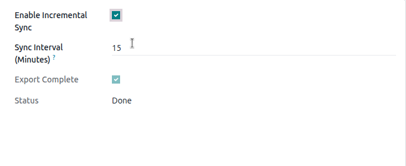

Turn Odoo data into Power BI reports without slowing down Odoo.
Niyu Power BI Connector Pro lets you choose the exact Odoo tables, columns and records you want for reporting. Export clean reporting tables, refresh them on schedule, and build Power BI dashboards on data that is already prepared for analysis.
Pick only useful dataSelect the exact Odoo table and columns needed for your Power BI model. Keep reports clean and avoid exporting noisy fields. |
Filter before exportUse Odoo domain filters such as confirmed sales, posted invoices, active products or one company only. |
Refresh automaticallyEnable incremental sync so Power BI can refresh from updated reporting tables instead of forcing repeated full Odoo exports. |
|
Why this matters
Power BI should not fight your live Odoo database.When Power BI reporting depends on direct live pulls from transactional Odoo screens, every refresh can become slow, fragile and hard to control. This connector gives your reporting team a prepared source instead. |
|
|
Setup
Connect once. Keep your reporting pipeline controlled.Add your reporting destination credentials in Odoo settings, save the configuration, and use the connector menus to create Power BI-ready exports.
|

|
Create reporting datasets without writing SQL.
Choose the Odoo table, select columns, add a domain filter, and run the export. The connector prepares clean data for Power BI dashboards.


Column selectionExport only the fields your Power BI report needs. This keeps the dataset lighter and easier to model. |

Domain filteringSend only the records that matter. Example: posted invoices, confirmed orders, one company, one warehouse, or active products only. |
Use Odoo domains to send the right records to Power BI.
Do not dump everything. Build reporting datasets around business rules your team already understands.
Posted invoices onlyUseful for finance dashboards where draft invoices should not affect revenue numbers. [('state','=','posted')]
|
Confirmed sales onlyKeep quotations out of your confirmed sales dashboard. [('state','in',['sale','done'])]
|
Active products onlyAvoid archived products in inventory and purchase dashboards. [('active','=',True)]
|
|
Realtime ready
Incremental sync for reporting that stays fresh.For large Odoo databases, full export every time is expensive and slow. Incremental sync exports new and changed records based on safe cursors, so your Power BI refresh has a cleaner source. Useful for sales orders, invoices, stock moves, products, contacts, purchase orders and other high-volume Odoo tables.
|

|
From Odoo model to Power BI dashboard in clear steps.
The connector gives your team a repeatable process. Define once, test, schedule, then build Power BI reports from the prepared data source.
01 Choose modelSelect sale orders, invoices, stock moves, products, contacts or any approved Odoo model. |
02 Select columnsKeep only fields required for the Power BI report and remove unnecessary noise. |
03 Apply domainFilter by company, status, date, active records, warehouse, salesperson or business rule. |
04 Export dataRun full export for the first load or incremental export for changed records. |
05 Refresh Power BIUse Power BI on the prepared reporting source instead of repeatedly querying live Odoo screens. |

|
Export control
Run exports when you need them. Schedule them when they become routine.Use manual exports for setup, testing and one-off reporting needs. Once the query is verified, turn it into a scheduled reporting pipeline.
|
Logs, change history and recovery controls.
A reporting connector must be visible. See what ran, who changed a query, how many rows exported, and which export needs attention.

|

|
|
Safe reporting
Controlled access, safer exports and cleaner governance.Admins decide who can configure reporting exports. Users get a clean interface instead of raw database access.
|

|
Useful for the Odoo reports teams actually ask for.
Build datasets around sales, inventory, purchase, finance and operations without forcing every user to understand database structure.
Sales reportingOrders, order lines, customers, sales teams, quotations and confirmed revenue. |
Inventory reportingProducts, stock moves, transfers, warehouses, locations and operation history. |
Purchase reportingRFQs, purchase orders, vendors, products, purchase lines and expected receipts. |
Finance reportingPosted invoices, move lines, payment analysis, customer balances and tax-ready datasets. |

Know your output schemaSelected columns become predictable reporting fields, which makes Power BI modeling simpler. |
 Track incremental runsSee when a query last ran and whether the next sync should export all data or only changed data. |
Built for real Odoo reporting problems.
This is not just an export button. It is a controlled reporting layer for teams that depend on Power BI every day.
Report refresh is too slowAvoid repeated heavy pulls from Odoo by refreshing Power BI from prepared reporting data. |
Too many useless fieldsSelect only the columns needed for the dashboard so your Power BI model remains clean. |
No visibility on failuresUse query logs, change logs and statuses to understand what happened without guessing. |
Questions before you install.
Simple answers for Odoo admins, BI teams and implementation partners.
Do I need SQL knowledge?No. You create exports from Odoo models, columns and domain filters inside the Odoo interface. |
Can I control what goes to Power BI?Yes. Use column selection and domain filters to decide exactly what the reporting dataset should contain. |
Does it help with large Odoo databases?Yes. Incremental sync and filtered exports reduce the need to export everything repeatedly. |
Can I audit exports?Yes. Query logs and change logs help you review runs, updates and issues from inside Odoo. |
Build Power BI dashboards from clean Odoo data.
Column selection. Domain filters. Batch export. Incremental sync. Scheduled refresh source. Query logs. Change logs. Error states. Recovery controls.